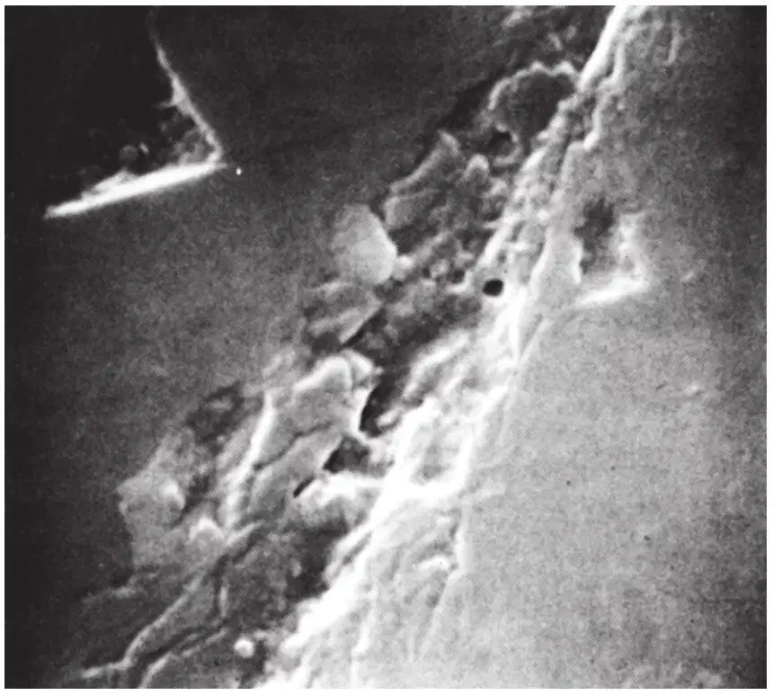
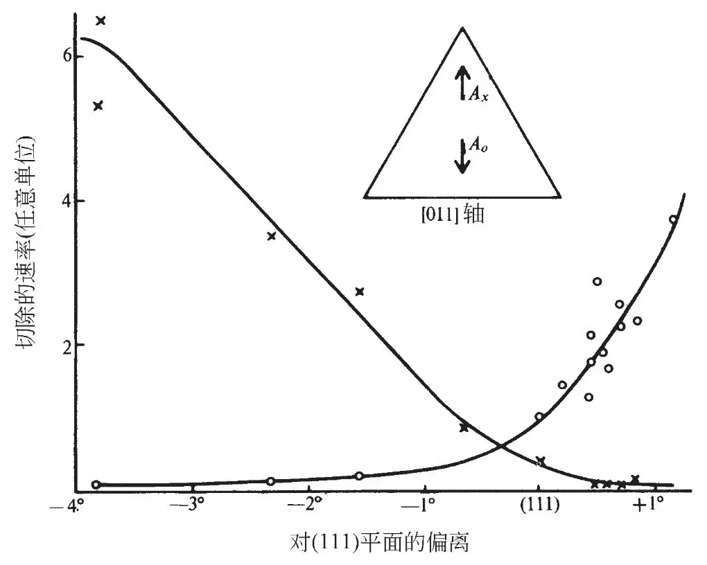
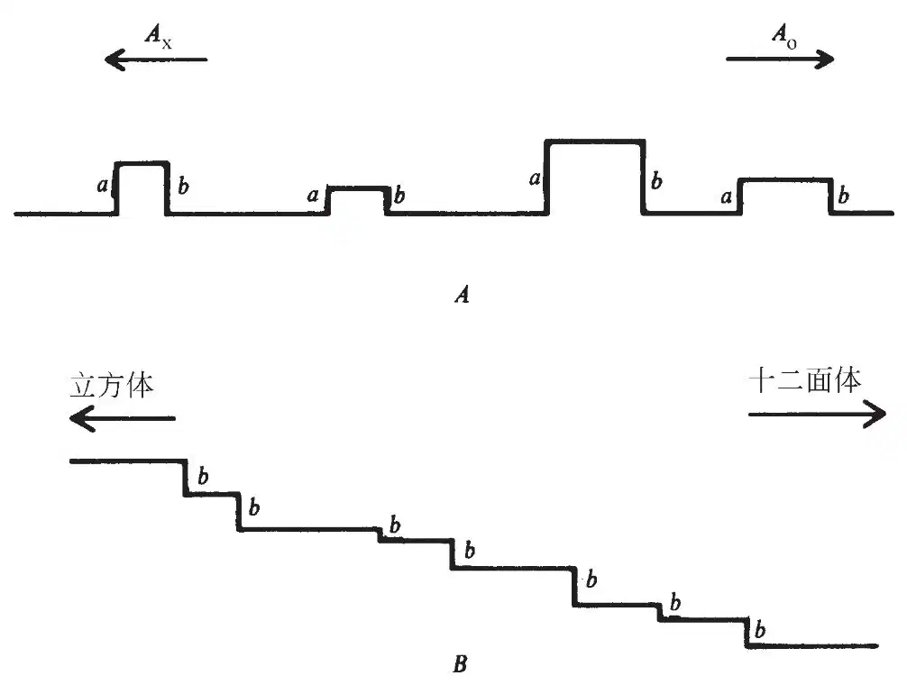
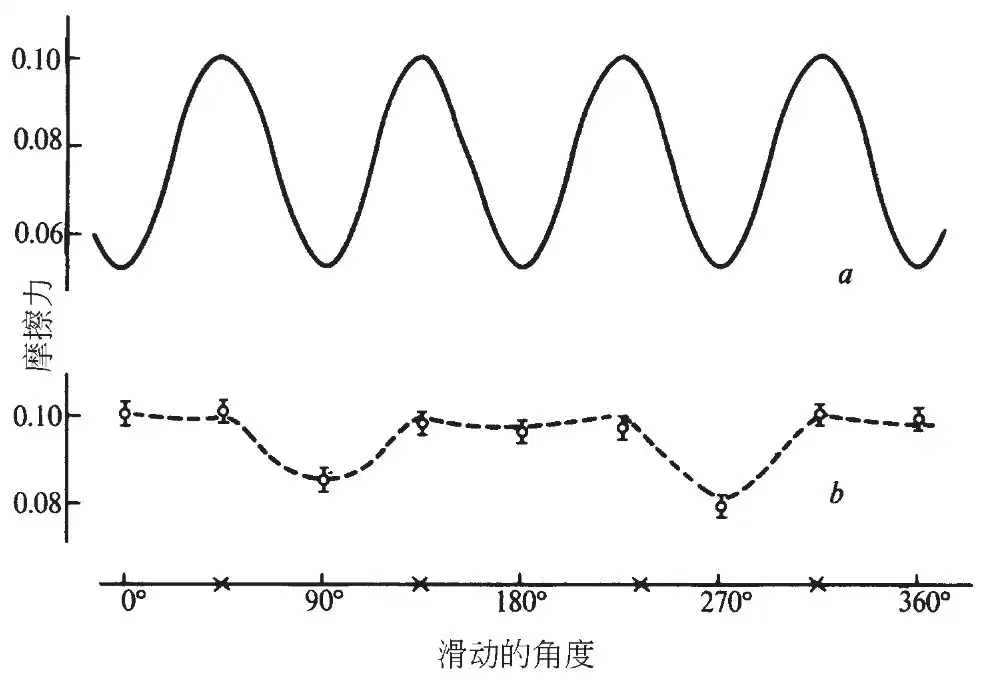
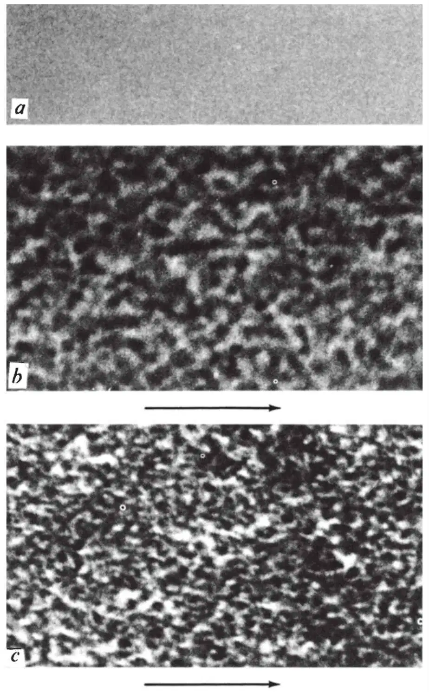

英文
英文威尔克斯
编者按
来自牛津的约翰·威尔克斯所做的贡献中令人感兴趣的不仅仅在于抛光的金刚石在显微镜下是粗糙的这一特定研究结果，还在于近几十年来它越来越多地涉及材料科学的若干主题：润滑和摩擦的微观机制、表面的微观形貌和对超硬物质的探求。威尔克斯强调固体表面的抛光与磨削是有区别的，抛光包括由强烈的摩擦热产生的局部熔化。但是只有金刚石粉本身能抛光金刚石，磨削一定是这种机制：粉末切削表面后，表面的粗糙情况在某种程度上取决于晶面的取向。 英文
抛光的金刚石表面具有不同寻常的性质，因为这种脆性物质的抛光通常是通过机械切削来进行的。 英文
在过去的几百年中，将金刚石加工成形和抛光以生产宝石所用的方法在本质上保持不变。一直到最近，这些操作的物理学基础才得到了研究，它们那不同寻常的特征也得到了充分的理解。本文概述了抛光过程的主要特征，并且描述了一些最近的实验，它们阐明了对于抛光过程本身和所产生的抛光表面都极有特征性的本性。我们将要说明，这些独特性质可能是由金刚石极硬且脆的本性所导致的。 英文
抛光金刚石的常规方法是将金刚石抵在覆盖着细小金刚石粉末的轻油悬浊液的旋转铸铁轮（或磨光盘）表面上，或者是抵在表面嵌入金刚石粉末的金属基体的轮表面上。这种方法一个最令人吃惊的特征是，如果要在金刚石上磨制一个立方体表面，就会发现在用黏合了粉末的轮子进行的抛光过程中，平行于立方轴方向上的磨除速率约是同一表面在与立方轴呈45°角方向上的速率的100倍。在其他面上也观测到了类似的效应，在用铸铁磨光盘进行抛光时甚至发现了更为显著的速率差异，因为在金刚石更具刚性的方向上更容易磨掉磨光盘上的粉末。 英文
在把金刚石原料加工成宝石时，必须要在抛光定位刻面前切除一定量的余料。另一个不同寻常的特征就是这种材料的切除会产生与抛光几乎一样的效应，只不过为了快速切除会使用较大尺寸的金刚石粉末。对于大多数材料来说，抛光和通过磨削来切除材料是相当不同的过程。原料的切除一般是通过使用磨料粉末以本质上是切削的过程来实现的；粉末比样品更坚硬，它们在移动中或者挖去原料，或者施加应力而使样品产生破裂。与此相反，抛光一般是一个涂抹的过程，通过用另一种材料进行摩擦，在两个表面的粗糙部位之间真正接触的小区域中产生高温，高温引起粗糙部位的局部熔融，继而使其变平滑。由此可知，为了将样品抛光，我们必须使用具有较高熔点的抛光材料，以便使样品在摩擦时首先熔融和流动。关于磨削与抛光过程一般特征的更详细资料可参见鲍登和泰伯[1]与科特雷尔[2]的文章。 英文
考虑到上述这一切，可以预料人们在从金刚石上切除余料以及对其进行抛光时都会遇到困难。就原料的切除而言，不存在比金刚石更硬的物质可以用来进行磨削切削。在摩擦操作中，金刚石的热传导性高，将会倾向于降低局部接触区域中热位点的温度，而高温甚至是从金刚石到石墨的转化过程所必需的。因此，情况对于磨削和抛光似乎都是不利的，但事实上，金刚石工业所用的磨削和抛光金刚石的传统方法却是相当成功的。磨削速率相对来说较低，但是很容易获得高度抛光，而且金刚石表面可以作为一个良好的光学标准平面[3]。 英文
关于抛光过程的第一个科学实验是在50多年前由托尔考斯基[4]进行的，他提出，磨削和抛光过程都是通过微观尺度上的机械切削实现的。这一切削过程将会受到解理面的形貌相对于磨削方向的位置的控制，并且会因此在某些方向上比在另一些方向上更容易发生切削过程，从而导致颇为可观的磨削速率差异。为了说明解理面的几何排列方式，托尔考斯基使用了以同样的八面体和四面体形小块搭建的金刚石模型，并由此解释了立方体和十二面体平面上的硬度变化[4,5]。 英文
托尔考斯基主要关心实践应用，因而他关于如何抛光和磨削金刚石的结论很快就在金刚石行业得到应用，就像他另一个关于展示金刚石刻面的最佳方式的研究导致了广为人知的明亮琢型的产生一样。另一方面，他关于潜在机制的说明却没有得到广泛发表，因此没有引起多少注意。他的处理方法遭到了批评，根据是金刚石肯定不是像他的模型中那样由同样大小的基本模块搭建而成的，但是该模型的实质功能在于说明解理面的位置——而它正确地做到了。过去15年来关于金刚石的若干实验的结果，再加上对于脆性材料本性越来越多的了解，可以证实托尔考斯基的观点实质上是正确的。 英文
上述实验中托尔考斯基观察到了但并未强调的一个关键特征[4]，就是切除材料的速率与抛光磨盘总转数成比例，而与其速率无关。这个结果得到了威尔克斯和威尔克斯[5,6]的确认，它表明热激发过程在材料切除中的作用并不重要。两种材料的相互摩擦使真正接触的局部区域产生了热，而且过剩温度随着摩擦速率的上升而快速增加[1]。每转的磨削不随摩擦速率提高而增加这一事实清晰地证明局部热位点在磨削过程中不起重要作用。尤其是，它排除了西尔[7]的观点，即金刚石通过燃烧或转化为石墨而磨削的可能性。另一方面，人们可以预想，如果磨削是通过机械切削或解理过程而进行的，那么轮的每一转会切除相同量的材料。 英文
若干位作者，比如凯利[8]，已经讨论了关于材料通过切削或脆性断裂而破坏的必需条件。凯利、泰森和科特雷尔[9]曾考虑，毫无缺陷的理想晶体是否会通过切变或在张力下脆性断裂发生塑性破坏。他们指出，对于诸如铜、金和银等面心金属来说，产生断裂所需的应力是产生切变所需应力的约30倍，而且破坏的产生经常是由于塑性形变而不是解理。另一方面，计算表明，在所考虑的各种物质中，氯化钠和金刚石是最容易由于脆性断裂而破坏的。氯化钠与金刚石中切变和解理的临界应力是近似相等的，但是计算还没有精细到足以指出哪一过程是更为有利的。不过，这些计算都是针对理想晶体的，而对于真实材料的实质问题是，位错的存在和运动是否会允许先塑性流动后再断裂。 英文
金刚石中的位错已被埃文斯[10]所观测到，他用蚀刻法制备金刚石样品，然后在透射电子显微镜下直接观察到了位错。弗兰克和兰[11]也用X射线照相技术对其进行了清晰的描述。埃文斯[12]所提到的计算指出位错的运动会因为必须要打破碳—碳键而被抑制。位错的运动已由埃文斯和维尔德[12,13]进行了实验研究，他们使用具有薄板形式的金刚石样品，在其中部加置负荷，然后观察它们是因断裂还是塑性形变而破坏。他们发现，低温时样品板总是会因断裂而破坏，但是当温度超过1,500 ℃时，可以观测到塑性流动量的增加。因此金刚石中的位错可能具有相当的流动性，不过在室温时被某种阻碍所抑制，只有通过相当大的热激发才能克服这种阻碍。由于上面所提到的实验中的磨削和抛光速率与局部热位点的温度无关，有人断言，磨削并不伴随着任何位错的热激发运动。 英文
不时有人提出，金刚石中的塑性流动可能是由强烈的局部压力而产生的。压力对于脆性材料的影响有时会是令人惊讶的，例如，将诸如岩盐等脆性材料的平板压缩到其初始厚度的一半而不产生裂痕[14]是有可能的，而且豪斯和托兰斯基[15]认为，通过用钢球挤压金刚石而产生的环形裂纹可以作为塑性流动的证据。后来朗和小松[16]利用X射线照相法对这类裂纹周围的区域的研究指出没有这种塑性形变的迹象，弗兰克和朗[17]由此指出，可以按照断裂过程对裂纹加以描述。 英文
我们断言磨削的机制是一种机械切削。这一结论为弗兰克、朗、兰和威尔克斯[18]用X射线照相法对磨削痕迹周围区域的研究所证实，该研究表明，表面的应变状态与断裂过程而非塑性流动所导致的应力相一致。我们相信，在任何有关磨削和抛光的实验中都不存在位错运动的可靠证据，尽管布鲁克斯[19]以及甘恩和考克斯[20]曾宣称在室温下观测到金刚石中的塑性流动。布鲁克斯用金刚石制成的努普压头挤压金刚石表面，并且宣称凹痕的形态表明曾发生过塑性流动。但是，对布鲁克斯凹痕的仔细研究可以看出清晰的脆性断裂迹象（图1），它在以前的显微图像中可能一直都是模糊的。甘恩和考克斯的观测是基于对彼此挤压的小块楔形金刚石的研究，但是他们的证据充其量是不确定的。即便是在这些相当特殊的条件下，也不存在发生塑性流动和位错运动的明确证据。 英文

图1．用努普压头挤压金刚石表面得到的扫描电子显微图像（×8，400） 英文
现在我们要介绍三组实验，它们确证了断裂过程并且描绘出抛光后金刚石表面不同寻常的性质。第一组实验是用一个简单的微型磨削检测器来研究材料切除速率[21]——简而言之就是金刚石的硬度——随表面指向和抛光方向的变化。硬度通常对于磨削刻面的任何指向变化都极为敏感。例如，图2所示为通过使八面体平面偏离示图中所标出的（011）轴而得到的表面的材料切除的相对速率。叉形符号表示Ax方向上由磨削所导致的材料切除速率，圆形符号则表示Ao方向上的速率。我们看到在一个真正的八面体平面上，Ao方向上的切除速率比Ax方向上的2倍还要大，但是只偏离1°就足以使相对硬度关系逆转。 英文

图2．在八面体平面附近的表面上碾磨所产生的材料切除的相对速率。符号○和×对应于插图中所示的方向。 英文
托尔考斯基的处理方法并未解释这种指向效应，他的方法在讨论八面体的面时也是有困难的。在立方体表面和十二面体面上的磨削速率差异可以利用通过在不同方向上磨削而导致不同结构产生的解理面的形貌来解释。由于解理面趋向于与一个八面体的面平行，这种处理方法似乎预言了一个不存在磨削难易方向的均一表面，而这与测量结果是违背的。为了解释这一点，我们必须考虑偏离的八面体刻面的行为。 英文
如同图3A中颇为概略地显示的那样，通过机械切削过程抛光后得到的一个金刚石表面不是平坦的，而是包含着由解理面无规则排布所围成的峰和谷。由此可知，磨削是通过从这些微小山峰的顶部和侧部切除材料而实现的。如果图3A表示通过八面体的一个面的截面，平行于Ax和Ao方向，那么解理面就会具有这样的形貌：最有可能发生材料切除的位置是边a和b（参考文献5）。还可以知道最容易磨削的方向是Ao，以及大部分材料因此是从b边切除的。另一方面，如果令一个面与八面体的面倾斜成一个小角度，那么解理面的形貌仍保持原样，所以微小山峰的结构就如图3B中概略地显示的那样。从形貌的角度看，磨削轮一定会得到数量增加的b类型的边，而硬度则相应地下降。类似地，相反方向上的偏离则会增加硬度。 英文

图3．抛光后金刚石表面的示意图（见正文） 英文
我们还可以预期硬度随偏离的变化会非常快。如果微小山峰的线性尺度全都具有同样的数量级h，与磨削轮接触的山峰之间的平均距离就会大很多，因为真正的接触面积不到名义上的面积的10–4。因此山峰之间的距离可能具有100h的数量级，才能使1°的偏离就足以使图3A中的形貌改变成图3B中那样，并由此而使易磨削位置的数目近似翻了一倍。类似的论证可以用来解释正的与倾斜的立方体面和十二面体面的硬度。从这个模型所能得到的所有预言都与实验结果吻合[5]。 英文
我们还对磨削实验显示的抛光后金刚石表面的粗糙性质进行了研究，方法是观测在空气中金刚石在金刚石表面滑行时的摩擦力。一段时间之前，西尔[7]曾指出抛光立方体表面的摩擦力随着滑行方位角的变化而变化，并具有四重对称性。最初看来这个结果是令人惊讶的，因为鲍登和汉威尔[22]曾指出，空气中的金刚石表面为一层强烈吸附的薄膜所覆盖，它使摩擦力比起在高真空中清洁表面降了一个数量级。因此，即使金刚石表面被黏着性的吸附气体薄膜所覆盖，金刚石的对称性也会透过薄膜表现出来。 英文
空气中的金刚石间摩擦力是由鲍登和扬[23]首先测得的，后来鲍登和泰伯指出，他们的结果表明摩擦力μ与负载W之间具有形如μ∝W–1/3的近似关联。接着，他们提出，这种关联性会由于实际上的真实接触区域之间的附着过程而增加，而且这种附着就是摩擦力产生的原因。不过，凯西和威尔克斯最近的测量结果[25]表明，摩擦力在一个宽广的负载范围内是与负载无关的，其中包含着早期实验中的负载范围。于是，看起来附着机制并不是导致摩擦力产生的机制，这个结果被下面的事实所证实，即用轻油将金刚石表面润滑后摩擦力保持不变。 英文
利用与抛光的金刚石表面粗糙性质有关的粗糙度（或棘齿）型机制，很容易解释已观测到的摩擦力行为。也就是说，摩擦力缘起于承担着正常负载的两个金刚石表面在其凹凸部分越过彼此被迫分离时所需要的功。这些功的一部分会在粗糙且不规则的表面再次靠拢时转化为热，因为返回运动会倾向于不连续和不可逆。这种分离功与负载成比例，因此这种机制导致摩擦力数值与负载无关。我们相信这种机制更普遍地解释了空气中金刚石间的摩擦力，如同凯西和威尔克斯[25]更为详细地讨论的那样。吸附膜承担润滑剂的作用，它减少了真空中所观测到的附着和强摩擦，但是并不掩盖表面的结构。 英文
图4a显示了最近关于金刚石在抛光立方表面上滑行的摩擦力的测量结果，它与西尔的结果[7]类似。金刚石的表面已经用常规方式进行了抛光，从而为平行于立方轴的一排精细的抛光线或者说凹槽所覆盖。尽管如此，摩擦还呈现出完全的四重对称性，在平行于和垂直于凹槽的方向上具有相同的数值。接着，我们在与立方轴成45°角的硬方向用磨削方法对一个表面进行重新抛光，直到原来的抛光线被一组与原方向成45°角的新抛光线所取代。曲线b显示了这个新表面上的摩擦力；摩擦力具有不同的数值，而且只呈现出二重对称性，最低数值出现在与抛光方向平行的方向上。 英文

图4．金刚石在抛光的立方体表面滑动时的摩擦力作为方位角的函数。a，正常的软方向上的抛光后；b，硬方向上的抛光后。符号×表示立方轴的位置。 英文
上述结果证实，抛光表面的形貌是由机械切削所决定的。正如磨削过程在不同方向上以不同速率进行一样，由于解理面的取向，通过不同方向上的抛光所制得的表面就会有不同的结构。根据托尔考斯基所讨论的，在平行于立方轴的常规方向上抛光的表面会呈现为具有四重对称性的粗糙表面。但是，如果将金刚石在某一个硬方向上抛光，表面结构将会倾向于形成平行于抛光方向的凹槽，并具有摩擦力测量中所显示的二重对称性。目前我们还将研究扩展到观测用铁针反复划过同一表面区域时所涉及的磨损效应。 英文
第三组实验是利用高分辨电子显微技术和碳复型技术对抛光金刚石表面结构进行观测。研究表明该结构是不规则的并且具有很小的尺度；因此必须要特别小心以保证显微图像是清晰的而且没有受到像散的影响。图5显示了在类似条件下经谨慎控制所制备的显微图像，仅有的区别在于图5a的样品是云母的新鲜解理面，而图5b和5c则是抛光的金刚石表面。金刚石显微图像中更为鲜明的对比说明其表面比云母要粗糙很多，而且其不规则性的尺度具有50 Å的数量级。 英文
图5b和5c中的显微图像是从同一块宝石以同样的技术得到的，不过图5b是来自以常规方式抛光的立方体表面，而图5c则是来自抛光的八面体表面。我们还曾在另一块金刚石立方体表面和八面体表面上观察到类似的结构，而且在十二面体表面上发现了不同的特征结构。这些结果确认了一个为金刚石抛光者所熟悉的事实，即抛光的质量取决于所抛光的特定的面，如同从抛光过程的机械性质中所得知的那样。人们期望至少在某种程度上表面结构可以用解理面来加以描述。在一个立方体表面上，这些解理面的交线会位于与抛光方向成45°角的方向，而且值得注意的是，在这些方向上存在着形貌特征。关于我们的结果的更多具体内容以及制样技术的细节，将会在其他文章中发表。 英文
金刚石的独特在于它外观上高度抛光的表面可能实际上在显微镜尺度下却是机械粗糙的，这是其脆性所导致的后果。由于金刚石的磨损速率和金属表面的光亮效果都高度依赖于工具的表面结构，因此目前我们正在将这些结果运用在将金刚石制成金属加工的切割工具上。例如，两个具有相同外部几何形状但是制作成具有不同结晶学取向的单晶金刚石车刀，其磨损速率表现为可重现的，而且相差7倍（参考文献26）。在这个特别的实验中，用两个结晶学取向完全不同的金刚石车刀车削一块用于制造汽车活塞的铝硅合金，其磨损几乎可以肯定是由上面所讨论的断裂面形貌所控制的。对于金刚石的磨损和它们所产生的光亮效果正进行进一步实验。 英文

图5．样品的显微图像，a，取自解理的云母；b，取自抛光的金刚石立方表面；c，取自抛光的金刚石十二面体表面。箭头表示抛光方向。（×1,000,000）。 英文
在此我要感谢凯西先生提供图1和图4，感谢威尔克斯博士提供图2，感谢德赖弗博士和桑顿先生提供图5中的显微图像，并且感谢科学研究理事会与戴比尔斯工业钻石部对这项研究的支持。 英文
（王耀杨 翻译；郝伟 审稿）